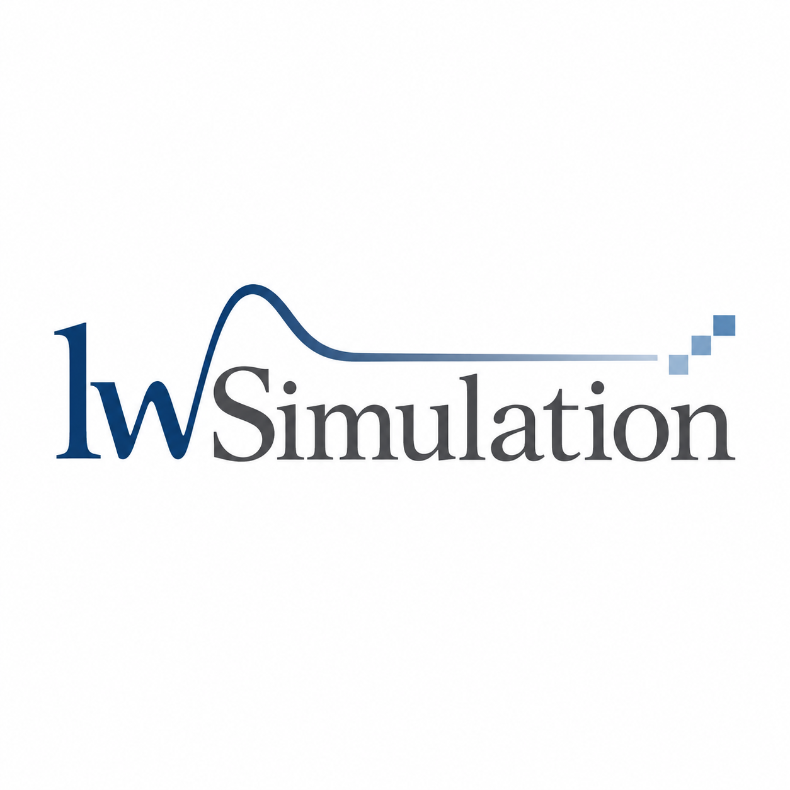

问题与机理
问题成因与证据
关键场间作用
模型假设与适用范围

JUNO · PRINCIPLE-DRIVEN DESIGN
面向半导体装备与工业研发
以仿真揭示物理机理、识别问题成因，
将原理转化为设计逻辑与参数化方案。
刘万锁 ／ 杭州 Juno 公司超算中心主任
开始了解01 / 从现象到设计
让仿真贯穿研发决策：
从为什么发生，到应该改哪里、怎样改。
把复杂场图转化为工程师可以执行的判断，将关键参数、作用规律和适用范围沉淀下来，为后续产品与工况变化提供设计依据。
机制 → 变量 → 方案 → 验证
辨识主导机制与场间反馈，找到真正值得干预的环节。
明确改动方向与关键变量，把分析结论转化为参数化方案。
交付设计规律与验证依据，支撑后续调整和持续迭代。
02 / 技术基础
围绕问题引入必要的物理过程，
减少过度简化造成的分析偏差。
多物理场耦合 · 关系示意
从输运过程出发，识别流动与温度、反应之间的相互影响。
03 / 优化方法 拟建服务
从问题成因中提取目标、变量与约束，
以多物理场复核支撑方案取舍。
性能目标
关键变量 · 制造约束
结构拓扑 · 流道拓扑
初始构型 → 候选构型
物理一致性
性能比较 · 验证依据
AI 辅助优化为拟建服务；以上为方法流程，不代表已完成的性能结果。
04 / 工程案例 · 管路沉积
高长径比管路 PVD（物理气相沉积）
结构与流动为概念示意，无定量刻度。改善幅度及适用工况以项目数据为准。
中部供气、两端排气的布局下，需要控制管内压力差对沉积环境的影响。
入口偏置量 · 进气角度 · 入口尺寸
对照评价轴向压力均匀性，把改善方向落实为可调整的设计参数。
05 / 工程案例 · 跨流态输运
跨流态微通道出口设计
出口构型为概念示意；不同工况下的结论需结合模型适用范围验证。
对比不同口型在跨流态条件下的出口速度、射流形态与工况敏感性。
将出口几何与输运特征关联，通过扩张角度与长度等参数调节出口响应。
研究依据：Liu et al., Microfluidics and Nanofluidics, 2024, 28:12. DOI: 10.1007/s10404-023-02705-9 ↗
06 / 成果交付 · 持续研发
从问题诊断、专项优化，到长期研发协同，
按项目目标组织技术与交付。
问题成因与证据
关键场间作用
模型假设与适用范围
改动逻辑与候选方案
参数化模型与关键变量
性能比较与制造约束
验证方案与评价指标
设计规律与使用说明
后续迭代与更新建议